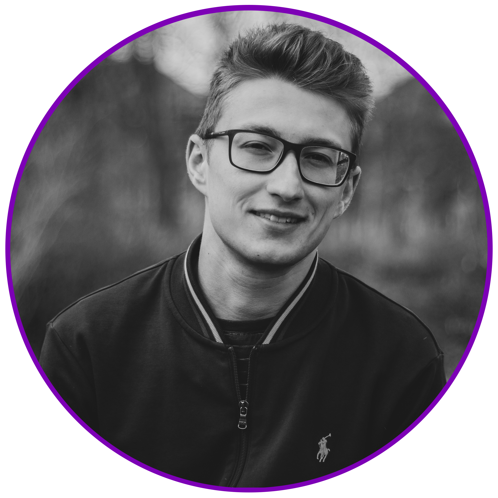
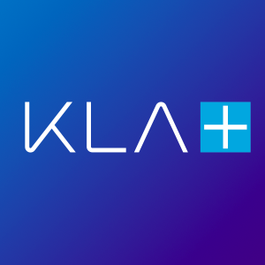

Systems Engineer | Physicist | Advanced Technology Enthusiast
I am interested in advanced technologies that help improve the future of humanity.

I am a Systems Engineer at KLA developing and calibrating complex electron-beam metrology tools that deliver nanometer-scale precision for the world’s most advanced semiconductor processes. My work sits at the intersection of hardware, software, statistical analysis, and fundamental physics.
Before KLA I completed my Master’s in Physics at LMU Munich’s Nano-Institute, where I used machine learning for the inverse design of achromatic metalenses and fabricated chiral metamaterials integrated with perovskite nanocrystals — work that was published in ACS Photonics. My foundation in experimental particle physics (LHC collision simulation and interpolation techniques) gives me a rare ability to move fluidly between deep theoretical models and real-world production systems.
I believe the most powerful technologies are those grounded in rigorous physics and built to serve humanity’s long-term progress.

I am responsible for maintaining and continuously developing a complex electron-beam-based metrology system used in high-volume semiconductor manufacturing.
Designed ultrathin metalenses using machine learning to achieve achromatic performance across broad wavelength ranges. Metalenses leverage semiconductor-derived nanofabrication techniques to replace bulky conventional optics.
Read master thesis (PDF)Fabricated chiral silicon nanoantenna arrays using electron-beam lithography, chemical vapor deposition, and plasma etching. Deposited perovskite nanocrystal monolayers and demonstrated strong polarization-dependent two-photon photoluminescence enhancement.
Read ACS Photonics paper (2022)Supervised four semesters of lab courses for physics, medicine, and dentistry students. Discovered a passion for teaching and mentoring.
Contributed Python automation and propellant grain moulding to a 5 m hybrid-fuel student rocket project across mechanical, aerospace, and CS disciplines.
“Studies of Interpolation Techniques in the Parameter Space of Signal Models for (BSM/SUSY) Searches” at the LHC. Investigated whether computationally expensive Monte Carlo collision simulations could be replaced by intelligent interpolation between existing signal points — a direct precursor to modern surrogate modeling techniques.
Read bachelor thesis (PDF)I’m always interested in conversations about advanced metrology, nanophotonics, deep-tech hardware, or opportunities where rigorous physics meets real engineering impact.